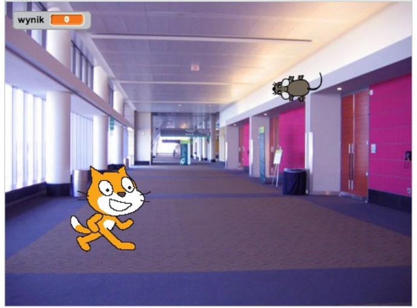
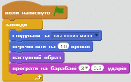
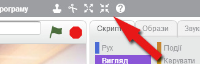
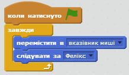
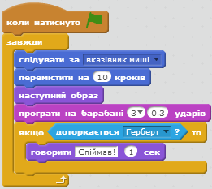
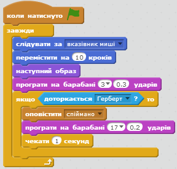
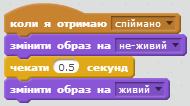
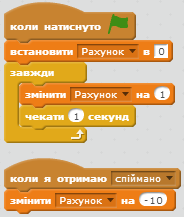

Фелікс та Герберт
Передмова:
Ми збираємось створити гру, в якій кіт (Фелікс) переслідуватиме мишеня (Герберта). Впродовж гри Ви контролюєте Герберта за допомогою мишки, намагаючись втекти від Фелікса. Що довше Герберту вдається залишатись неспійманим, то більше очок Вам нараховується, тільки не дозволяйте коту впіймати мишеня, бо тоді очки зніматимуться.
Крок 1: Фелікс рухається за курсором
- Створіть новий проект.
- Клікніть на значок Сцена поруч зі списком Спрайтів, перейдіть у вкладці "Нове тло" до категорії "У приміщенні" та імпортуйте фон "Зала" (hall). Видаліть оригінальний порожній фон.
- Переіменуйте спрайт на Фелікс.
- Створіть наступний скрипт для Фелікса: 
Протестуй свій проект
Натисніть на значок із зеленим прапорцем і перевірте:
Чи рухається Фелікс за курсором? Чи схожа манера його руху на прогулянку? Чи рухається він з належною швидкістю?
Крок 2: Фелікс переслідує Герберта
Нам треба подбати про те, щоб Фелікс переслідував Герберта, а не курсор.
- Створіть ще один спрайт за допомогою кнопку вибору спрайтів та оберіть у папці "Тварини" вкладки "Образи" спрайт мишеняти.
- Переіменуйте мишеня на Герберта.
- Змініть його образ та зробіть його меншим за Фелікса, використовуючи кнопку зменшення спрайту 
- Створіть скрипт, який рухатиме Герберта: 
Протестуй свій проект
Натисніть на значок із зеленим прапорцем.Чи рухається Герберт разом із мишкою? Чи переслідує Фелікс Герберта?
Крок 3: Фелікс повідомляє, що зловив Герберта.
Ми хочемо, щоб Фелікс повідомив нам про те, що упіймав Герберта.
- Змініть скрипт Фелікса на такий: 
Протестуй свій проект
Натисніть на значок із зеленим прапорцем.
Чи повідомляє Фелікс про те, що він упіймав Герберта?
Крок 4: Герберт перетворюється на привида після того, як його упіймали.
Фелікс не повідомлятиме про те, що спіймав Герберта, натомість Герберт перетворюватиметься на привида, коли його упіймають.
- Змініть скрипт Фелікса, щоб він діяв наступним чином, коли кіт спіймає Герберта: 
- Імпортуйте новий образ для Герберта, обравши у вкладці Образи папку Фантазії і образ "ghost 2-a".
- Змініть його розмір, натиснувши на кнопку зменшення спрайту.
- Змініть назви образів Герберта таким чином, щоб образ мишеняти називався "живий", а образ привиди "не живий".
- Створіть новий скрипт для перетворення Герберта на привида: 
Протестуй свій проект
Натисніть на значок із зеленим прапорцем.
Чи перетворюється Гереберт на привида, коли його спіймано?
Чи правильні звуки подає Фелікс у відповідний момент?
Чи дає Фелікс Герберту достатньо часу для втечі?
Крок 5: Набираємо очки
Введемо функцію накопичування очок, щоб знати наскільки успішно ми зберігаємо життя Герберту. Рахунок починатиметься з нуля і збільшуватиметься на 1 за 1 секунду. Коли Фелікс спіймає Герберта, рахунок зменшується на 10.
- Створіть змінну для всіх спрайтів під назвою Рахунок. Клікніть на Змінні у вкладці Скрипти і створіть змінну "рахунок".
- На сцені створіть два наступні скрипти: 
Протестуй свій проект
Натисніть на значок із зеленим прапорцем.
Чи збільшується рахунок на 1 через кожну секунду?
Чи зменшується рахунок на 10, коли Фелікс ловить Герберта? Що відбувається, коли Герберта спіймано ще до того, як гравець набрав 10 очок? Чи починається рахунок з нуля, коли стартує нова гра?